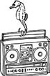

\1\2ğaç\3
Okyanustaki en gürültülü şey nedir?

Karidesler.
Karada ya da denizde yaşayan canlılar arasında, tek bir hayvanın çıkarabildiği en yüksek sesi mavi balina çıkarsa da, toplama bakıldığında doğal olan en yüksek sesi karidesler çıkarır.
Bir “karides yığını”nın sesi, operatörleri kulaklıkları aracılığıyla sağır edebilecek ve bir denizaltı sonarının “yönünü şaşırtabilecek” tek doğal sestir.
Bu karides yığınının altındaysanız, yığının üstündeki hiçbir ses duyulmaz; yığının üstündeyseniz de yığının altındaki hiçbir sesi duyamazsınız. Alt taraftan bir ses duymak ancak o sese doğru bir alıcı uzatılmasıyla mümkün olabilir.
Bir araya gelmiş karideslerin gürültüsü sağır edici 246 desibele eşittir; sesin su altında beş kat daha hızlı hareket ettiğini göz önünde bulundurduğumuzda bile bu şiddet, havadaki 160 desibele denktir. Bu da kalkış yapan bir jetten (140dB) ya da insanın ağrı eşiğinden oldukça yüksektir. Tanık olanlar bu durumu dünyadaki herkesin aynı anda et kızartmasına benzetmişleridir.
Ortaya çıkan ses, trilyonlarca karidesin kocaman kıskaçlarını aynı anda açıp kapatmalarının yarattığı gürültüdür. Kıskaçlarını açıp kapatan, Alpheus ve Synalpeus cinslerine mensup çeşitli karidesler tropikal ya da astropikal bölgelerdeki sığ sularda bulunur.
Oluşan sesten daha da ilginci ise şudur: Saniyede 40.000 karelik video çekimleri sesin, kıskaçların kapanmasından 700 mikrosaniye sonra gerçekleştiğini açıkça göstermektedir. Ses kıskaçların kendisinden değil, patlayan kabarcıklardan gelmektedir, buna “kavitasyon” etkisi denir.
Bu olay şöyle gerçekleşir: Kıskacın bir tarafındaki tümsek diğer taraftaki çukurluğa tam olarak oturur. Kıskaç o kadar çabuk kapanır ki arada kalan su saatte 100 km hızla dışarı fışkırır; bu da bir sürü su kabarcığının açığa çıkmasına yetecek bir hızdır. Su yavaşlayıp normal basınca ulaşınca kabarcıklar patlayarak ortaya yüksek bir ısı (20.000°C kadar yüksek), büyük bir patlama ve ışık çıkmasına sebep olurlar (ışığın açığa çıkması çok nadiren görülür ve bu olaya “sonoluminescence” adı verilir), ışığa sebep olan şey sestir.
Karidesler bu sesi avlarını sersemletmek, iletişim kurmak ve eşlerini bulmak için kullandıkları gibi, sonarları bozmak için de kullanırlar; keskin, aşırı yüksek ses gemilerin çarklarında çökmelere neden olur.